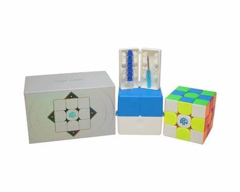
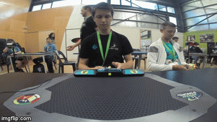

Rubik's Cube!
Rubik's cube is one of the few hobbies that I love so much. Some people aren't familiar with Rubik's cube or how is it a hobby. But I will explain everything. To start. What is a Rubik's cube? A Rubik's cube is a 3x3x3 puzzle and when you scramble it. It becomes almost impossible to solve because there are 43 quintillion possible configurations of the cube. This is why no one can solve it with intelligence. You need a proper method so you can apply it to the cube. And one of the things is "Algorithms" And an Algorithm is a set of moves you apply to the cube to do a certain thing. You need some planning and watch youtube videos for more explanation. This is a Link so you can know the full method of how to solve a Rubik's cube. With that being said. There are competitions for who can solve the cube fastest. And the current world record is 3.47 seconds for solving the cube. There are lots of variations for the cube-like 4x4x4, clock, Skewb, Square-1, and so on. This is why cubing is so interesting to do! My current average speed is 20 seconds. And I'm still working on it!
 